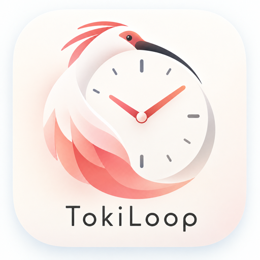

TokiLoopTokiLoop - 24時間ルーティン（iPhone、iOS 18.5以降）
不具合のご報告やご質問は、メールでお寄せください。
いただいた順に返信します。
次のことを書いていただくと、早く調べられます。
予定・To Do・目標などの内容は書かないでください。いただいたメールの扱いはプライバシーポリシーに書いています。
無料版でも、記録や移動時間の逆算などの基本機能を使えます。無料版で登録できる数には、次の上限があります。
TokiLoop Pro（月額）は300円/月で、この上限がなくなります。1か月ごとに自動で更新されます。
解約・購入の復元・返金は、Appleの仕組みで行います（下のよくある質問）。
iPhoneの設定→［名前］→サブスクリプション→TokiLoop から解約できます。アプリの 設定→このアプリについて→サブスクリプションを管理 からも開けます。更新日の24時間前までに解約すると、次の更新はされません。解約しても、期間の終わりまでProを使えます。その後は無料版に戻り、作ったデータはそのまま使えます。
App Storeでの購入の返金は、Appleが受け付けます。reportaproblem.apple.com から申し込めます。返金するかどうかはAppleが決めます。
アプリの 設定→TokiLoop Pro で「Proにする」（Proのときは「Proの詳細・購入の復元」）を押し、「購入を復元」を押します。購入したときと同じApple Accountを使ってください。
1日の単発To Doは5個、定型ルーティンは8個、24時間スケジュールのパターンは2つまでです。予定と移動のTo Doは数えません。上限に達すると、TokiLoop Proの案内が出ます。
TokiLoop Proは、Appleの標準の利用規約（EULA）のもとで販売しています。
| 販売事業者 | ChronoCraft |
|---|---|
| 運営統括責任者 | 請求があれば遅滞なく開示します。 |
| 所在地・電話番号 | 請求があれば遅滞なく開示します（特定商取引法第11条ただし書の規定に基づき省略しています）。 |
| メールアドレス | tokiloopsupport@gmail.com |
| 販売価格 | TokiLoop Pro（月額）300円（税込）/月。App Storeの購入画面の表示が優先 |
| 商品代金以外の費用 | 通信料（ダウンロードや通信にかかる費用） |
| 支払方法 | App Store（Apple Account） |
| 支払時期 | 購入時と、以後1か月ごとの更新時。お使いのApple Accountに請求されます。 |
| 提供時期 | 購入完了後すぐ。購入後すぐにProの機能を使えます。 |
| 自動更新・解約 | 更新日の24時間前までに解約しない限り、1か月ごとに自動で更新されます。解約は、iPhoneの設定→［名前］→サブスクリプション、またはアプリの「サブスクリプションを管理」から行えます。解約しても、期間の終わりまでProを使えます。作ったデータはそのまま使えます。 |
| 返品・返金 | デジタルの商品のため、返品はできません。返金はAppleの手続き（reportaproblem.apple.com）で申し込めます。 |
| 動作環境 | iPhone、iOS 18.5以降 |